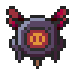
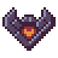
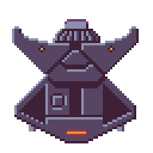

Crimson Wings
Introdcción
Resumen
Explora los confines del espacio en este emocionante shoot 'em up de estilo retro en pixel art. Pilota tu nave desde una perspectiva cenital mientras enfrentas oleadas de enemigos, esquivas proyectiles y utilizas un arsenal de armas para sobrevivir. Con modos de juego desafiantes y una progresión dinámica, este juego ofrece horas de acción y adrenalina.
Género
Shoot 'em Up (SHMUP): Un juego arcade de naves con enfoque en combates rápidos, reflejos y estrategia táctica para sobrevivir al caos.
Plataformas
Dispositivos Móviles: Compatible con teléfonos Android e iOS, optimizado para controles táctiles intuitivos y una experiencia fluida.
Objetivo Principal
Modo Historia: Superar cinco niveles repletos de acción y desafíos, cada uno con enemigos únicos, jefes épicos y una curva de dificultad ascendente. Modo Infinito: Tras completar el modo historia, se desbloquea este modo, donde el objetivo es sobrevivir el mayor tiempo posible enfrentando oleadas interminables de enemigos con dificultad progresiva. El objetivo: alcanzar la puntuación más alta y superar a otros jugadores.
Mecánicas del Juego
Controles
Joystick Virtual: Utilizado para mover la nave en cualquier dirección. Dos Botones de Acción: - Uno para disparar los cañones. - Otro para activar los escudos limitados, ofreciendo inmunidad temporal. Sin Gestos: Los controles son táctiles e intuitivos, optimizados para móviles.
Power-Ups
Power-Ups Comunes: - Aumento de Velocidad de Disparo: Permite disparar más rápido durante un tiempo limitado. - Incremento de Cantidad de Disparos: Añade cañones adicionales a la nave por tiempo limitado. - Recuperación de Vida: Restaura parcialmente la barra de salud. - Recuperación de Escudos: Restaura la cantidad disponible de escudos. Power-Up Especial - Armadura de la Nave: - Se activa manteniendo presionado el botón de escudos durante un tiempo determinado. - Efectos: Mejora temporalmente varias estadísticas, como la velocidad, el daño de los cañones y la resistencia. - Limitación: Uso restringido según la gestión del jugador.
Sistema de Combate
Tipo de Armas: Cañones simples o dobles, activados por defecto. Los power-ups mejoran las armas temporalmente. Enemigos: Oleadas de naves rápidas y pequeñas. Enemigos grandes y lentos pero más resistentes. Drones en masa que presentan patrones de ataque difíciles. Jefes Finales: Cada nivel termina con un jefe único, con ataques y comportamientos específicos diseñados para poner a prueba la habilidad del jugador.
Progresión y Estrategia
El progreso en el juego se basa exclusivamente en la correcta gestión de los power-ups y escudos. Gestión de Recursos: Escudos: Limitados en cantidad, deben usarse estratégicamente para evitar daño crítico. Armadura: Herramienta clave en momentos difíciles, pero su activación requiere planificación.
Modos de Juego
Modo Historia: Niveles lineales con el objetivo de derrotar enemigos y enfrentarse al jefe final de cada nivel. El jugador avanza nivel por nivel hasta completar los 5 niveles principales. Si pierde toda la salud, reinicia el nivel actual. Modo Infinito: Se desbloquea al superar el modo historia. El objetivo es sobrevivir el mayor tiempo posible enfrentando oleadas de enemigos cada vez más rápidas y poderosas. La puntuación se incrementa con el tiempo sobrevivido y los enemigos destruidos. Puntuación acumulada puede convertirse en monedas para desbloquear nuevas naves.
Puntuación y Clasificación
Conversión de Puntos a Monedas: Los puntos obtenidos al finalizar el modo infinito se transforman en monedas, utilizadas para desbloquear naves con diferentes características. Leaderboard Global: Los jugadores compiten para alcanzar los mejores puntajes en una tabla global, fomentando la rejugabilidad.
Mecánicas de Supervivencia
Barra de Vida: Indica la salud de la nave. Disminuye al recibir daño y puede recuperarse con power-ups de vida. Escudos Limitados: - Proporcionan inmunidad temporal contra el daño. - Deben activarse estratégicamente según las amenazas. Condiciones de Derrota: Modo Historia: Si la barra de vida llega a 0, el nivel debe reiniciarse desde el principio. Modo Infinito: La partida termina, y los puntos acumulados se registran en el leaderboard.
Historia y Ambientación
Historia
En un futuro cercano, la Tierra es atacada por una especie alienígena conocida como los Thalorianos. Estascriaturas poseen tecnología avanzada y habilidades psíquicas, lo que las hace extremadamente peligrosas. Los Thalorianos buscan recursos vitales para su supervivencia y han decidido invadir la Tierra para obtenerlos. El jugador toma el rol de un piloto de élite cuya misión es defender la Tierra. La batalla inicial culmina en un enfrentamiento contra un jefe alienígena llamado Zorak, un comandante Thaloriano que lidera la invasión en la Tierra. Al derrotar a Zorak, la humanidad descubre que la única forma de asegurar su existencia es llevar la batalla al planeta natal de los Thalorianos, Thaloria. En Thaloria, el jugador deberá enfrentarse a hordas de enemigos y jefes más poderosos para destruir la fuente de su poder y poner fin a la amenaza alienígena de una vez por todas.
Diseño de Niveles
Nivel 1: La Tierra Ambientación: Ciudades y paisajes terrestres. Enemigos: Naves Thalorianas básicas. Jefe Final: Zorak, comandante Thaloriano. Objetivo: Defender la Tierra y descubrir la amenaza mayor. Nivel 2: Espacio Cercano Ambientación: Órbita terrestre y estaciones espaciales. Enemigos: Drones espaciales y cazas rápidos. Jefe Final: Estación espacial Thaloriana. Nivel 3: Cinturón de Asteroides Ambientación: Denso campo de asteroides. Enemigos: Mineros Thalorianos y criaturas del espacio. Jefe Final: Criatura gigante del cinturón. Nivel 4: Base Thaloriana Ambientación: Base militar en un planeta alienígena. Enemigos: Soldados Thalorianos y torretas defensivas. Jefe Final: General Thaloriano. Nivel 5: Thaloria Ambientación: Planeta natal de los Thalorianos, ambientes variados y alienígenas. Enemigos: Fuerzas de élite Thalorianas. Jefe Final: Reina Thaloriana, controladora psíquica de la invasión.
Diseño Visual
Estilo General
Estética Nostálgica: Inspirado en los clásicos shoot 'em up como 1942, el juego utilizará pixel art con detalles brillantes y vibrantes para capturar la esencia retro. Tono Visual: Los colores y los elementos destacarán tanto por su simplicidad como por su contraste, dando vida a un mundo que mezcla el estilo arcade con detalles llamativos.
Diseño de Naves
Naves del Jugador: - Diseños geométricos simples con colores blanco y naranja, simbolizando heroísmo y tecnología avanzada. Naves Enemigas: - Forma consistente con variaciones geométricas según el tipo de enemigo. - Colores predominantes: violeta o lila con detalles en naranja o rojo para reflejar la identidad de la tripulación extraterrestre. Jefes Finales: - Naves de gran tamaño y diseño más elaborado, destacando con detalles complejos, estructuras segmentadas y animaciones sutiles que refuercen su presencia intimidante.
Entornos
Nivel 1 - Tierra: Ambientado sobre océanos, bosques y ciudades. Los fondos tendrán detalles como ondas en el agua, edificios y árboles en pixel art. Niveles 2, 3 y 4 - Espacio: Entornos variados como el espacio profundo, nebulosas coloridas, campos de asteroides y galaxias lejanas. Animaciones sutiles como estrellas parpadeantes o ligeros movimientos de partículas en nebulosas, para mantener una atmósfera retro sin sobrecargar el diseño. Nivel 5 - Thaloria: Planeta alienígena, predomina la tierra rojiza.
Interfaz de Usuario (UI)
Diseño Minimalista: -Incluye barra de vida y escudos, puntaje, y barra de vida del jefe cuando el jugador lo enfrenta. - Los elementos estarán organizados en las esquinas de la pantalla para facilitar la lectura durante la acción. Indicador de Alteraciones por Jefes: En caso de cambios en la jugabilidad (como controles invertidos): Mostrar un icono animado en pantalla, acompañado de texto breve como "Controls Inverted!" para alertar al jugador.
Animaciones y Efectos
Disparos: Proyectiles simples, rápidos y en línea recta, con diferentes colores según el tipo (ejemplo: naranja para el jugador, violeta para enemigos). Explosiones: Efectos en pixel art con destellos brillantes y partículas que se dispersan. Indicador de Daño: La nave parpadea en rojo al recibir impactos, alertando al jugador. Power-Ups: Animaciones sutiles como brillo o rotación de los objetos mientras flotan en el entorno. Activación de Escudos: Un contorno luminoso rodea la nave durante la inmunidad. Armadura Especial: Añade efectos visuales como destellos y detalles pixelados en la nave, mostrando claramente que se han mejorado las estadísticas.
Tablas
Enemigos
| Sprite | Nombre | Descripción | Niveles | Atributos |
|---|---|---|---|---|
|  | Dron | 1 | ||
|  | Caza | 1 | ||
|  | Zorak | 1 |
Naves del Usuario
| Sprite | Método de obtención | Precio |
|---|
Power-Ups
| Sprite | Nombre | Descripción | Probabilidad de Aparición |
|---|